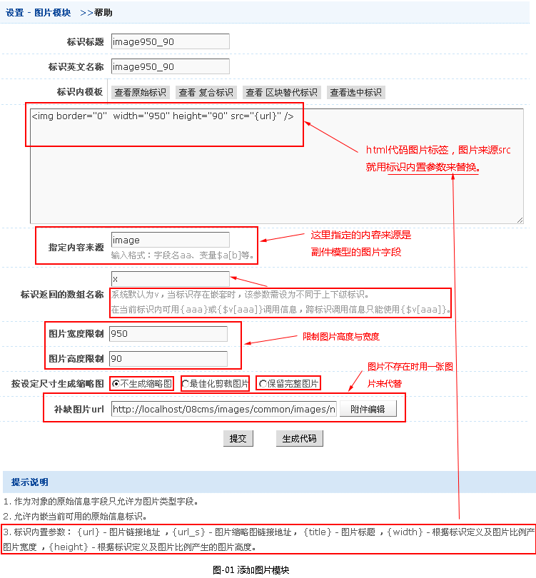
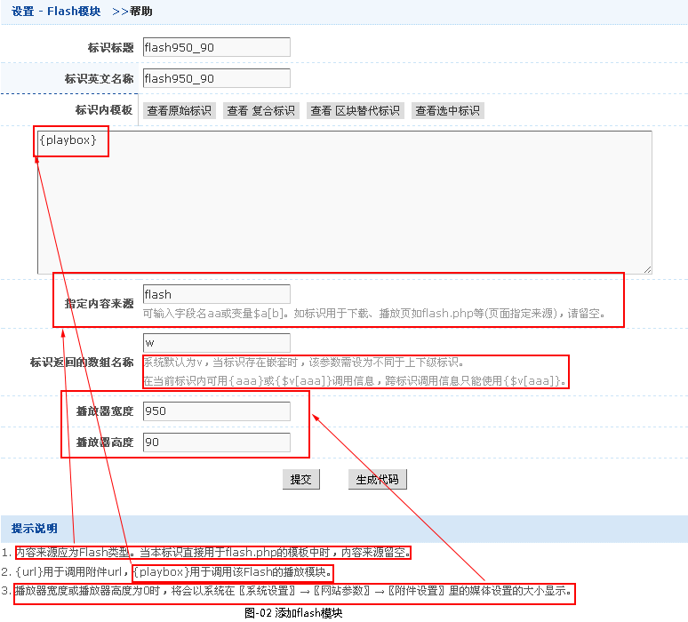
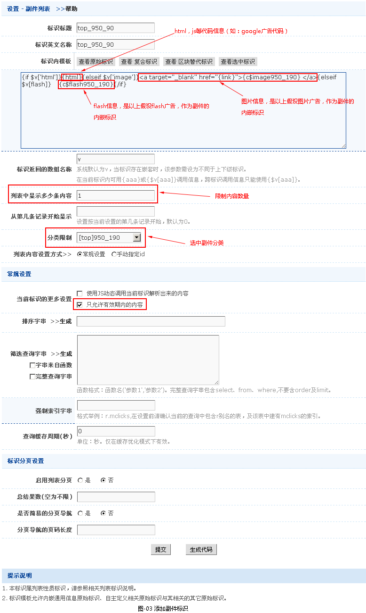

副件标识调用
标识说明
副件用于对副件模型内的数据输出。
标识用途
副件主要是指广告、友情链接、一些网站附属信息（如：关于我们，版权申明等）。。
副件标识调用
- 副件模块标识的添加
-
在添加标识之前，先添加好副件（这一过程已在架构手册->副件手册中说明，请阅读）。
假设用户在前台页面要添加一个950X60广告。
副件模块标识的添加有以下几步骤：
第一、假设该广告是图片，则添加图片模块{c$image950_90}，模板风格->复合标识->图片模块->添加，弹出设置图片模块的窗口，如图-01所示。

第二、假设该广告是flash，则添加flash模块{c$flash960_50}，模板风格->复合标识->flash模块->添加，弹出设置flash
模块的窗口，如图-01所示。

第三、添加副件标识 {c$top_950_90}，主要用来输出广告，模板风格->复合标识->图片模块->添加，弹出设置副件列表的窗口。

添加好之后，就将{c$top_950_90}放到html代码相应位置。